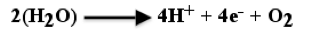
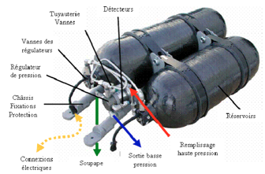
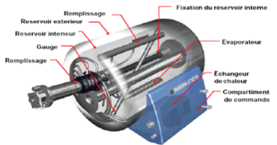
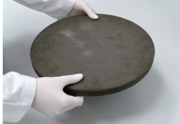
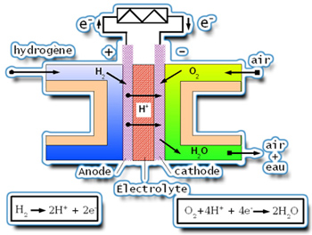
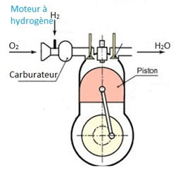
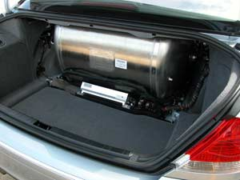
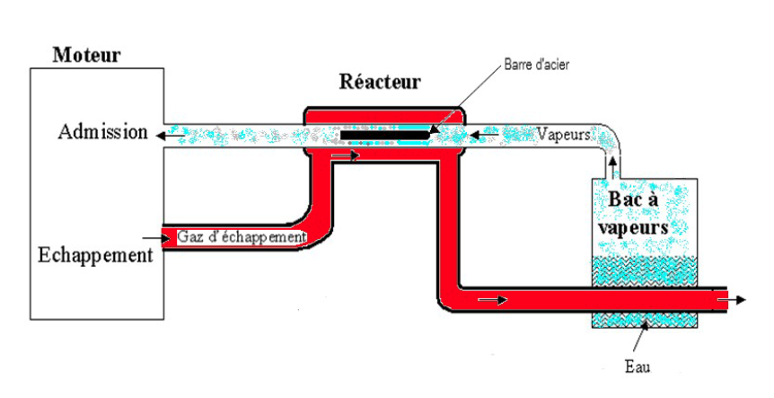
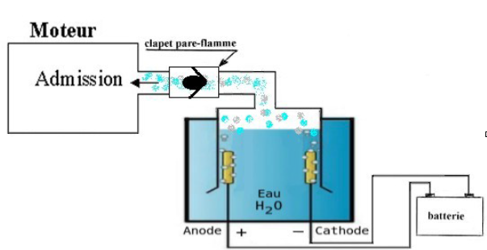

L’hydrogène (terme qui renvoie plus précisément au dihydrogène sous forme gazeux) est un vecteur énergétique (au même titre que l’électricité) et non une source d’énergie. Ce qui signifie qu’il faut différentes sources d’énergie pour le produire et il a ensuite la capacité de restituer cette énergie avec un certain rendement. Un vecteur énergétique doit présenter un certain nombre de qualités :
Le reformage catalytique est un procédé qui consiste à faire réagir une molécule naphténique dans un catalyseur afin d’obtenir une molécule aromatique et d’autres part ce qui nous intéresse : de l’hydrogène. La réaction se fait sous pression et à haute température (500-550°C)
L’objectif d’une électrolyse et de décomposer l’eau selon les équations suivantes :
L’élément central de cette réaction est la chlorophylle : c’est un pigment vert capable d’absorber le plus grand nombre possible de photons solaires.
Ainsi, deux électrons réducteurs
associés à deux protons s’associent pour former une molécule d’hydrogène.
Cette méthode existe mais ne représente aucun intérêt a l’heure actuelle étant donné que selon des prévisions, les derniers barils de pétrole seront pompés vers 2080. Et de plus, cette technique rejette beaucoup trop de gaz à effet de serre que nous voulons limiter au maximum actuellement.
Simplement, la photolyse de l’eau est la décomposition d’une molécule d’eau par la lumière du soleil. Cette décomposition est régie par l’équation suivante : 
Le principe de cette méthode est de produire de l’hydrogène (H₂) et du monoxyde de carbone (CO) à partir de biomasse ou de charbon. Ce procédé est composé de 4 étapes : Dans un premier temps la biomasse est chauffée entre 100 et 160°C, l’eau contenue dans la celle-ci va donc s’évaporer, on récupère ainsi un combustible carboné. Vient ensuite l’étape de pyrolyse, on prive le combustible d’oxygène tout en le chauffant progressivement de 120°C à 600°C. La matière va se décomposer pour donner du carbone pur, du monoxyde de carbone, des hydrocarbures ainsi que des matières volatiles. On chauffe cette phase à 1500°C afin que les matières volatiles s’oxydent et pour produire du dioxyde de carbone et de l’eau la chaleur nécessaire aux étapes précédentes. Enfin on chauffe le tout entre 800et 1200°C en absence d’oxygène, le carbone pur va oxyder le CO₂ et l’eau produite par l’étape précédente pour produire du monoxyde de carbone et du dihydrogène.
| Etat | Principe | Utilisation | Avenir | |
|---|---|---|---|---|
| Forme gazeux | L’hydrogène a une masse volumique de 0.09kg/m³ a pression et température normale, pour le conserver on doit donc le compresser pour réduire la masse volumique. Aujourd’hui on est capable de construire des réservoirs en acier pour conserver l’hydrogène à une pression de 200bars. | C’est le moyen le plus utilisé dans l’automobile pour conserver l’hydrogène. | Les chercheurs travaillent sur de nouveaux réservoirs, faits de matériaux plus léger, permettant d’avoir une pression de 700bars ce qui permet d’augmenter la masse volumique de l’hydrogène à 42kg/ m³ |  |
| Forme liquide | L’hydrogène se liquéfie à une température de -250°C, à -253°C et a une pression d’environs 1bars la masse volumique de l’hydrogène est de 71kg/m³, ce qui représente un avantage considérable comparé a l’hydrogène gazeux | Ce moyen de conservation est réservé à la haute technologie telle que l’aéronautique, par exemple pour les réservoirs des fusées. | Conserver l'hydrogene liquide demande des reservoirsparfaitement isolés et qui utilise de lourds dispositfs de refroidissement, ce qui est trés energivore. C'est pour cela que ce moyens a peu d'avenir |  |
| Forme solide | Le principe de cette méthode de conservation est d’avoir de l’hydrogène absorbé dans un autre produit (autrement dit d’avoir une « éponge à hydrogène »). Les hydrures se révèlent être capable d’absorber l’hydrogène. | Ce procédé est relativement nouveau, il n'y donc pas encore d'application concréte. | Cette méthode semble être la plus prometteuse, en effet les risque de l’hydrogène ne doivent plus être pris en compte, le procédé est réversible, la conservation ne demande pas d’entretien et le gain en place est considérabl |  |
 Le fonctionnement d’une pile à combustible est assez similaire à celui d’une pile classique. En effet d’un coté on a l’anode où se produit l’oxydation d’un gaz (dans notre cas de l’hydrogène) et de l’autre la réduction de l’oxygène présent dans l’air. Entre les deux on place un électrolyte qui permet le passage d’ions. A chaque réaction, deux électrons sont libérés. L’avantage par rapport à une pile classique est que les électrodes ne se dégradent pas pendant la réaction et donc tant qu’elle est alimentée en gaz la pile peut fonctionner en continu. Malgré l’aspect « propre » de ce type de pile (elle consomme des gaz abondants et ne rejette que de l’eau) il se pose un problème majeur à son développement : son prix. En effet la membrane qui sépare les électrodes est soit constituée de platine (métal rare et cher) soit un nouveau type de membrane synthétique à base de polymères est développé mais son prix reste encore trop important. Son utilisation est cependant actuellement développée dans de très nombreux domaines tels que :
Moteur à hydrogène : Dans la même configuration que les moteurs thermiques de nos voitures, il est possible de remplacer le combustible par de l’hydrogène. . L’hydrogène au contact du dioxygène va
former de l’eau est provoquer un dégagent d’énergie, énergie qui sera utilisée pour propulser le véhicule.
Pour cela il suffit seulement d’augmenter
la résistance des pistons et des cylindres étant donné le caractère nettement plus inflammable de l’hydrogène par rapport aux combustibles issus du pétrole et également de régler le carburateur La
combustion d’un kilogramme d’hydrogène produit trois fois plus d’énergie qu’un litre d’essence classique.


Certains constructeurs fabriquent déjà des voitures de séries avec un moteur à essence ayant une carburation adaptée pour fonctionner à l'hydrogène (il y a deux réservoirs distinct). A l’image de BMW
avec le modèle Hydrogen 7.
Réservoir à hydrogène liquide d’une BMW hydrogen7, on peut voir que le stockage reste un réel problème dans le développement de cette technologie
L’hydrogène est aussi utilisé dans le domaine des transports (voitures, bus, trains, bateaux) pour les véhicules électriques alimentés par une pile à combustible. Production d’électricité : l’hydrogène peut permettre de produire de l’électricité à grande échelle grâce à des centrales à pile à combustible, celle-ci sont déjà installé en Europe depuis mars 2013 et ont en moyenne une puissance de 300kW. Ces centrales ont l’avantage d’être silencieuse et non polluante, cependant leurs durées de vie n’est que de 7ans. On peut utiliser aussi l’hydrogène comme carburant pour groupe électrogène thermique simplement en modifiant le moteur de la même manière que pour un véhicule.

Le principe est assez simple et facile à réaliser :
Le principe utilisé ici et simplement celui décrit dans l’électrolyse de l’eau. On utilise ici la batterie de la voiture comme source de courant continu, une réserve d’eau ionique reliée directement à l’admission. Lors du fonctionnement, le courant sépare les molécules d’eau et les gaz inflammable obtenu sont injectés dans les cylindres (on dispose un clapet anti retour pour bloquer la combustion dans l’espace voulu). Cette technique permet à l’heure actuelle de réduire la consommation des moteurs thermiques de 30 %.

L’hydrogène est un vecteur énergétique permettant de produire de l’électricité, via la pile à combustible ou de groupe électrogène, et de fournir l’énergie nécessaire à faire fonctionner des moteur adaptés (moteur thermique modifié ou moteur électrique alimenté par une pile a combustible). Certains modèles de voitures et bus sont déjà sur le marché mais en très faible quantité. Tous ces procédés on pour avantage de rejeter très peu de particules polluante. Cependant les moyens de production de l’hydrogène eux consomme des énergies fossiles ou à partir de matières polluante ,49% de la production est issu du gaz naturel et 18% par le charbon, une production plus propre est donc indispensable pour développer l’utilisation de l’hydrogène. Les moyens de stockage sont, eux aussi, à améliorer en effet la conservation sous forme de gaz reste dangereuse dû à la forte pression que nécessite l’hydrogène gazeux pour avoir une masse volumique importante et les capacités de stockage ne sont pas encore satisfaisantes (des recherche sont en cours pour améliorer ce point). L’hydrogène liquide est énergivore car il nécessite un système de refroidissement important pour rester à sa température de liquéfaction, de plus l’isolation doit être irréprochable ce qui nécessite une installation importante. Finalement l’hydrogène solide reste le moyen le plus durable, il reste cependant à améliorer le rendement de ce processus. L’hydrogène est un vecteur difficile à implanter à cause aussi de la mauvaise réputation de la molécule, qui aux yeux du publique est très dangereuse, en effet l’hydrogène est plus inflammable que l’essence mais est aussi beaucoup plus volatile ce qui permet de mieux se diffuser dans l’air et de se dispersé. La démocratisation de ce procédé fait aussi face au géant du pétrole qui (comme pour l’énergie électrique des voitures) s’oppose au développement des énergies renouvelables. L’hydrogène est donc un bon vecteur énergétique surtout dans le domaine des transports et dans la production d’électricité qui pourrait avoir de l’avenir si l’on réussissait à maitriser l’impact écologique de sa production, un stockage efficace, un cout plus avantageux que l’énergie fossile et une évolution dans les mœurs.